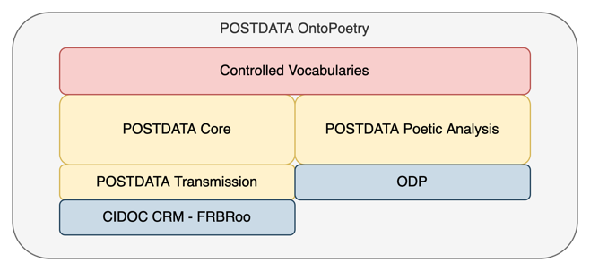

Ontopoetry Ontology facilitates a set of concepts for describing poetic
works (poems, poetic drama or plays written in verse and songs). It is the
product of a homogenization effort that considers different literary
traditions, periods, poetic genres, and
authorship. Additionally, this will enable the comparison of the characteristics
and data in this poetry and thus carry out invaluable research in Comparative
Literature and Comparative Metrical Studies quantitatively.
Two potential cases of use were the base to define the main Ontopoetry
Ontology subdomains (i.e., modules):
1)
Bibliographic information search and indexing: tackling the requirements of the poetry scholar
community researchers involves the intensive usage of bibliographic
information, mainly from the librarian domain. This information is used to
differentiate the different conceptual and physical properties of the works
yielding the definition of two modules:
i) Ontopoetry Core module represents the abstract idea
of the bibliographic information. Entities of works are required to
differentiate between the abstract idea of a work and its different expressions
(e.g., translations). Therefore, this module includes all the essential
information that characterizes works and their expressions, irrespective of
their physical materializations.
ii) Ontopoetry Transmission module represents the more tangible side
of bibliographic information related to poetic works. It extends the
descriptions of the Ontopoetry Core Module by linking the conceptual textual
editions or instances of Redaction with appropriate sources, between which we
distinguish bibliographic sources and primary sources providing ontological
elements to describe the materializations and manifestations of expressions,
including ownership, identification, integrity status, dimensions, or material,
among others.
2)
Poetic information annotation and searching:
i) Ontopoetry Poetic Analysis Module represents different phenomena
associated with metrics and prosody, including the textual elements or parts of
a poem and the different metrical patterns that analyse those elements. The
ontology allows metrical information annotation using scansion symbols for each
line and describes each element’s analysis at a metrical syllable, foot, or
morae level. In addition, we also include means to annotate the presence of
literary devices such as enjambment, synaloepha, and other relevant figures of
speech.

Fig. 1. Encapsulation of Ontopoetry Ontology.
In the
context of Ontopoetry, a work will be an abstract idea of a poem and may be as
complex as the author´s mind considered. In Ontopoetry, a work comes into
existence when the author´s mind decides to create it. The work is not
associated with anything physical and may have different expressions along its existence
as critical editions or translations, each one in turn with its manifestations,
that is, their physical items. In this sense, the work is just an author´s
intellectual purpose of creation that will characterize all the expressions related
to it. In
Ontopoetry, we consider individual works but the aggregation and complex works as well since the conception of the author´s idea may
be as complex as he wants, always considering that the work is original and unique.
Therefore, a work may be an anthology of poems (i.e., frb:F17 Aggregation work); in this sense, the author had the
idea of compiling them because she had an intellectual intention (i.e.,
evocated their childhood), or she used part of other works in its conception
(i.e., frb:F15 Complex Work).